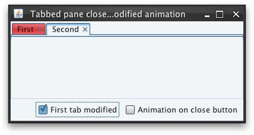
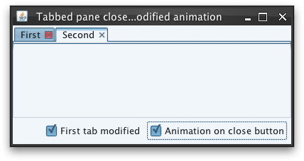

|
Description |
Client property name for specifying that only the close button of a
marked-as-modified tab component should pulsate. This property can be
specified on a single tab component, on a
JTabbedPane itself
(will hold for all tab components that don't define this property) or on
UIManager. The value should
be either Boolean.TRUE or
Boolean.FALSE. By default,
the animation on modified tabs is on the entire tab rectangle.
Note that this setting is only relevant for tabs marked with
SubstanceLookAndFeel.WINDOW_MODIFIED property.
|
|
Sample code |
import java.awt.BorderLayout;
import java.awt.Component;
import java.awt.FlowLayout;
import java.awt.event.ActionEvent;
import java.awt.event.ActionListener;
import javax.swing.JCheckBox;
import javax.swing.JComponent;
import javax.swing.JFrame;
import javax.swing.JPanel;
import javax.swing.JTabbedPane;
import javax.swing.SwingUtilities;
import org.pushingpixels.substance.api.SubstanceLookAndFeel;
import org.pushingpixels.substance.api.skin.BusinessBlackSteelSkin;
/**
* Test application that shows the use of the
* {@link SubstanceLookAndFeel#TABBED_PANE_CLOSE_BUTTONS_MODIFIED_ANIMATION}
* client property.
*
* @author Kirill Grouchnikov
* @see SubstanceLookAndFeel#TABBED_PANE_CLOSE_BUTTONS_MODIFIED_ANIMATION
*/
public class TabbedPaneCloseButtonsModifiedAnimation extends JFrame {
/**
* Creates the main frame for <code>this</code> sample.
*/
public TabbedPaneCloseButtonsModifiedAnimation() {
super("Tabbed pane close buttons modified animation");
this.setLayout(new BorderLayout());
// create a tabbed pane with few tabs
final JTabbedPane jtp = new JTabbedPane();
jtp.addTab("First", new JPanel());
jtp.addTab("Second", new JPanel());
// mark the tabbed pane to have close buttons on all tabs
jtp.putClientProperty(
SubstanceLookAndFeel.TABBED_PANE_CLOSE_BUTTONS_PROPERTY,
Boolean.TRUE);
this.add(jtp, BorderLayout.CENTER);
JPanel controls = new JPanel(new FlowLayout(FlowLayout.RIGHT));
final JCheckBox firstTabModified = new JCheckBox("First tab modified");
firstTabModified.addActionListener(new ActionListener() {
public void actionPerformed(ActionEvent e) {
Component comp = jtp.getComponentAt(0);
// based on the checkbox selection, mark the first tab component
// to have modified contents
((JComponent) comp).putClientProperty(
SubstanceLookAndFeel.WINDOW_MODIFIED, firstTabModified
.isSelected() ? Boolean.TRUE : null);
jtp.repaint();
}
});
final JCheckBox animationOnCloseButton = new JCheckBox(
"Animation on close button");
animationOnCloseButton.addActionListener(new ActionListener() {
public void actionPerformed(ActionEvent e) {
// based on the checkbox selection, mark the tabbed pane to have
// modified animations on the close button only
jtp
.putClientProperty(
SubstanceLookAndFeel.TABBED_PANE_CLOSE_BUTTONS_MODIFIED_ANIMATION,
animationOnCloseButton.isSelected() ? Boolean.TRUE
: null);
jtp.repaint();
}
});
controls.add(firstTabModified);
controls.add(animationOnCloseButton);
this.add(controls, BorderLayout.SOUTH);
this.setSize(400, 200);
this.setLocationRelativeTo(null);
this.setDefaultCloseOperation(JFrame.EXIT_ON_CLOSE);
}
/**
* The main method for <code>this</code> sample. The arguments are ignored.
*
* @param args
* Ignored.
*/
public static void main(String[] args) {
JFrame.setDefaultLookAndFeelDecorated(true);
SwingUtilities.invokeLater(new Runnable() {
public void run() {
SubstanceLookAndFeel.setSkin(new BusinessBlackSteelSkin());
new TabbedPaneCloseButtonsModifiedAnimation().setVisible(true);
}
});
}
}
The screenshot below shows tabbed pane with first tab marked as
modified (with WINDOW_MODIFIED property).
The modified animation is on the entire tab (this property is not set):

The screenshot below shows tabbed pane with first tab marked as
modified (with WINDOW_MODIFIED property)
and marked with this property set to Boolean.TRUE.
Note that the mouse cursor is over the close button itself to show the
animation colors:

|